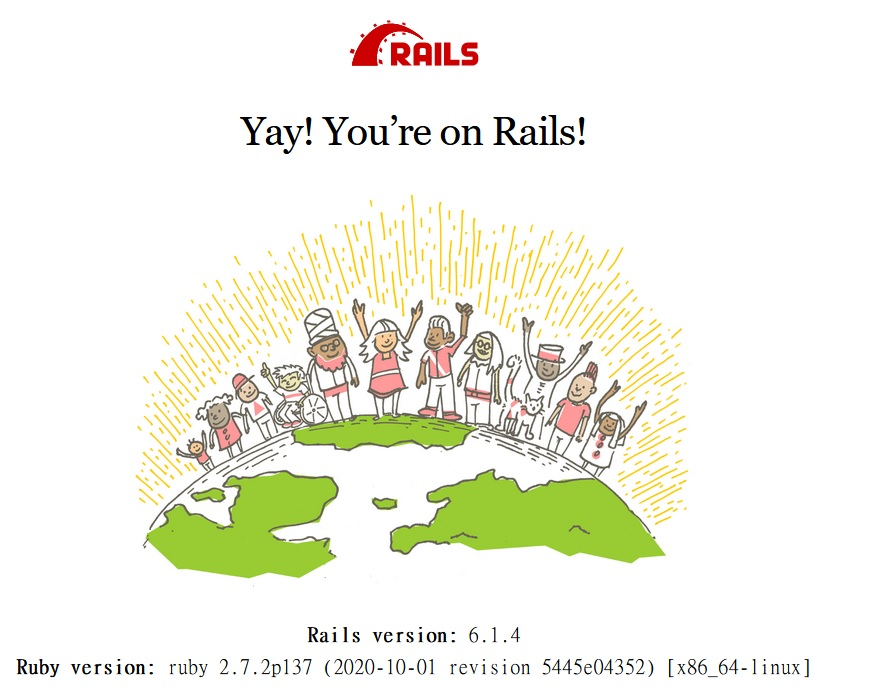
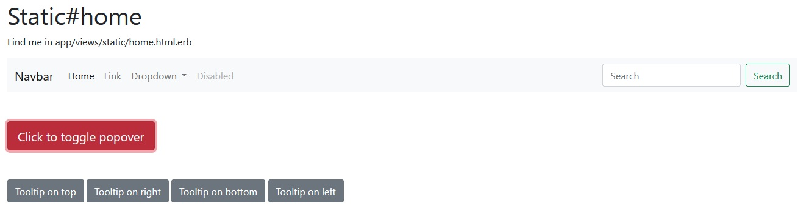
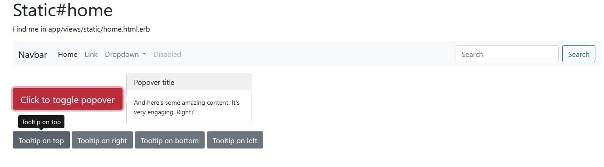

前言
由於自己最近在做練習的專案時，安裝 bootstrap v5 遇到了一些問題，後來發現是 bootstrap 更新到 5 之後在所需的套件上有些小改變，想說來做個紀錄，如果有人在裝 bootstrap v5 也卡住的話，也許這篇文章可以幫上忙。
環境要求
本篇文章僅介紹如何在 Rails 專案裡安裝 bootstrap5，請先安裝好
- Rails
- Yarn
創立專案 rails new
先來創建一個示範用的專案（名稱隨意），並cd過去
- $
rails new bootstrap5-demo - $
cd bootstrap5-demo
安裝Bootstrap v5.0
首先來看一下官網的Getting started / Download，這裡面介紹了很多種安裝的方法，其中也有 RubyGems 的方式，但我們今天要介紹的是 yarn 的安裝方法。
- $
yarn add bootstrap
yarn add v1.22.5
[1/4] Resolving packages...
[2/4] Fetching packages...
info fsevents@2.3.2: The platform "linux" is incompatible with this module.
info "fsevents@2.3.2" is an optional dependency and failed compatibility check. Excluding it from installation.
info fsevents@1.2.13: The platform "linux" is incompatible with this module.
info "fsevents@1.2.13" is an optional dependency and failed compatibility check. Excluding it from installation.
[3/4] Linking dependencies...
warning " > bootstrap@5.0.2" has unmet peer dependency "@popperjs/core@^2.9.2".
[4/4] Building fresh packages...
success Saved lockfile.
success Saved 1 new dependency.
info Direct dependencies
└─ bootstrap@5.0.2
info All dependencies
└─ bootstrap@5.0.2
Done in 16.15s.
在這邊看到一個warning，它說 bootstrap v5.0.2 需要 @popperjs/core 這個東西，而我們的專案裡面還沒有安裝，所以接著來安裝它。
- $
yarn add @popperjs/core@^2.9.2
yarn add v1.22.5
[1/4] Resolving packages...
[2/4] Fetching packages...
info fsevents@2.3.2: The platform "linux" is incompatible with this module.
info "fsevents@2.3.2" is an optional dependency and failed compatibility check. Excluding it from installation.
info fsevents@1.2.13: The platform "linux" is incompatible with this module.
info "fsevents@1.2.13" is an optional dependency and failed compatibility check. Excluding it from installation.
[3/4] Linking dependencies...
[4/4] Building fresh packages...
success Saved lockfile.
success Saved 1 new dependency.
info Direct dependencies
└─ @popperjs/core@2.9.2
info All dependencies
└─ @popperjs/core@2.9.2
Done in 39.76s.
此外，打開 node_modules/bootstrap/package.json，可以看到：
// node_modules/bootstrap/package.json
"devDependencies": {
...
"@popperjs/core": "^2.9.2",
...
"jquery": "^3.6.0",
...
}
從這邊可以知道，bootstrap 除了需要 @popperjs/core 之外，還需要安裝 jquery
- $
yarn add jquery
ependencies...
[4/4] Building fresh packages...
success Saved lockfile.
success Saved 1 new dependency.
info Direct dependencies
└─ jquery@3.6.0
info All dependencies
└─ jquery@3.6.0
Done in 53.53s.
看起來初步安裝應該是沒什麼問題了，接著要來做一些設定的部分。
修改 webpack 的 config 設定檔
因為我們要使用 webpacker 來將 CSS 的部分也一起打包，而不是使用 asset pipe line 的方式，所以這邊要修改一下 webpack/environment.js 這個檔案，如下：
- 修改 config/webpack/environment.js
// config/webpack/environment.js
const { environment } = require('@rails/webpacker')
const webpack = require('webpack')
environment.plugins.prepend(
'Provide',
new webpack.ProvidePlugin({
$: 'jquery',
jQuery: 'jquery',
jquery: 'jquery',
Popper: ['@popperjs/core'],
})
)
module.exports = environment
引入bootstrap
// app/javascript/packs/application.js
import "bootstrap"
const bootstrap = require('bootstrap')
document.addEventListener("turbolinks:load", () => {
var tooltipTriggerList = [].slice.call(document.querySelectorAll('[data-bs-toggle="tooltip"]'))
var tooltipList = tooltipTriggerList.map(function (tooltipTriggerEl) {
return new bootstrap.Tooltip(tooltipTriggerEl)
})
var popoverTriggerList = [].slice.call(document.querySelectorAll('[data-bs-toggle="popover"]'))
var popoverList = popoverTriggerList.map(function (popoverTriggerEl) {
return new bootstrap.Popover(popoverTriggerEl)
})
})
- 在 app/javascript 目錄下，新增 styles 資料夾，並在該資料夾內新增 index.js 及 bootstrap.scss 檔案
// app/javascript/styles/index.js
import './bootstrap'
// app/javascript/styles/bootstrap.scss
@import '~bootstrap/scss/bootstrap'
因為我習慣把 CSS 相關的檔案都建一個資料夾來管理，所以才會建立 styles 資料夾，裡面可以寫整個專案的 CSS。要記得在 packs/application.js 裡面把 styles 資料夾給拉進來打包。
// app/javascript/packs/application.js
import "styles"
直接這樣寫的話，他就會去抓 app/javascript/styles/index.js 這個檔案，因此我們剛剛需要在 styles 資料夾建立 index.js 的檔案，而這個 index.js 裡面再把同層的 bootstrap.scss 這個檔案引入，這樣 application.js 就可以抓到 bootstrap.scss 這個檔案了！
因為 bootstrap 畢竟是個人家設定好的框架，之後若是想新增自己寫的CSS檔案的話，就直接在 styles 資料夾下面新增檔案，接著在 index.js 裡面把它 import 進來即可。
若是之後想要新增手刻的CSS檔案：
// app/javascript/styles/common.scss #helloUser { cursor: text; } .avatar-label { vertical-align: middle; }// app/javascript/styles/index.js import './common'如此一來，這個新增的 common 檔案，就可以順利被 webpacker 打包進去了！
調整layout
跟安裝 TailwindCSS 一樣，因為我們希望使用 webpacker 來打包 CSS 檔案，因此需要在 views/layouts/application.html.erb 做一些調整如下：
- 找到 /app/views/layouts/application.html.erb 檔案，將stylesheet後面的link改成pack
<!-- app/views/layouts/application.html.erb -->
<!DOCTYPE html>
<html>
<head>
<title>Bootstrap5Demo</title>
<meta name="viewport" content="width=device-width,initial-scale=1">
<%= csrf_meta_tags %>
<%= csp_meta_tag %>
<%= stylesheet_pack_tag 'application', media: 'all', 'data-turbolinks-track': 'reload' %>
<%= javascript_pack_tag 'application', 'data-turbolinks-track': 'reload' %>
</head>
<body>
<%= yield %>
</body>
</html>
測試效果
新增頁面
- $
rails g controller static home，新增一個名叫 static 的 controller 以及 home 方法
Running via Spring preloader in process 1079
create app/controllers/static_controller.rb
route get 'static/home'
invoke erb
create app/views/static
create app/views/static/home.html.erb
invoke test_unit
create test/controllers/static_controller_test.rb
invoke helper
create app/helpers/static_helper.rb
invoke test_unit
invoke assets
invoke scss
create app/assets/stylesheets/static.scss
這個指令在之前的文章裡面也有使用到，可以看到它會建立 controller、views，連 routes 都幫我們設定好了。
<!-- app/views/static/home.html.erb -->
<div class="container">
<h1>Static#home</h1>
<p>Find me in app/views/static/home.html.erb</p>
<nav class="navbar navbar-expand-lg navbar-light bg-light">
<div class="container-fluid">
<a class="navbar-brand" href="#">Navbar</a>
<button class="navbar-toggler" type="button" data-bs-toggle="collapse" data-bs-target="#navbarSupportedContent" aria-controls="navbarSupportedContent" aria-expanded="false" aria-label="Toggle navigation">
<span class="navbar-toggler-icon"></span>
</button>
<div class="collapse navbar-collapse" id="navbarSupportedContent">
<ul class="navbar-nav me-auto mb-2 mb-lg-0">
<li class="nav-item">
<a class="nav-link active" aria-current="page" href="#">Home</a>
</li>
<li class="nav-item">
<a class="nav-link" href="#">Link</a>
</li>
<li class="nav-item dropdown">
<a class="nav-link dropdown-toggle" href="#" id="navbarDropdown" role="button" data-bs-toggle="dropdown" aria-expanded="false">
Dropdown
</a>
<ul class="dropdown-menu" aria-labelledby="navbarDropdown">
<li><a class="dropdown-item" href="#">Action</a></li>
<li><a class="dropdown-item" href="#">Another action</a></li>
<li><hr class="dropdown-divider"></li>
<li><a class="dropdown-item" href="#">Something else here</a></li>
</ul>
</li>
<li class="nav-item">
<a class="nav-link disabled" href="#" tabindex="-1" aria-disabled="true">Disabled</a>
</li>
</ul>
<form class="d-flex">
<input class="form-control me-2" type="search" placeholder="Search" aria-label="Search">
<button class="btn btn-outline-success" type="submit">Search</button>
</form>
</div>
</div>
</nav>
<div class="mb-5"></div>
<button type="button" class="btn btn-lg btn-danger" data-bs-toggle="popover" title="Popover title" data-bs-content="And here's some amazing content. It's very engaging. Right?">Click to toggle popover</button>
<div class="mb-5"></div>
<button type="button" class="btn btn-secondary" data-bs-toggle="tooltip" data-bs-placement="top" title="Tooltip on top">
Tooltip on top
</button>
<button type="button" class="btn btn-secondary" data-bs-toggle="tooltip" data-bs-placement="right" title="Tooltip on right">
Tooltip on right
</button>
<button type="button" class="btn btn-secondary" data-bs-toggle="tooltip" data-bs-placement="bottom" title="Tooltip on bottom">
Tooltip on bottom
</button>
<button type="button" class="btn btn-secondary" data-bs-toggle="tooltip" data-bs-placement="left" title="Tooltip on left">
Tooltip on left
</button>
</div>
開啟 rails server 及 webpacker
$
bin/webpack-dev-server，開啟 webpacker 打包 css 及 js 檔案再開啟一個終端機，cd切換到專案的目錄（參考步驟2.，像我就是cd到tailwind_css），並輸入$
rails s開始本地伺服器
在瀏覽器輸入網址 localhost:3000，應該會成功看到 Rails 的歡迎畫面

因為我們這次沒有特別設定首頁，因此要在網址列輸入 localhost:3000/static/home 才會看到 /app/views/static/home.html.erb 這個檔案的內容。

看到這個畫面，表示 bootstrap 的 CSS 已經成功裝好了，接著要按按看那幾個按鈕，滑鼠移過去看看有沒有效果

如果有成功出現這些效果的話，就可以確定連 popover 和 tooltips 的也成功設定完成了！
補充
本篇介紹的程式碼，都可以在我的GitHub上找到，請參考bootstrap5-demo，若有任何問題或是指正，歡迎再上面留言跟我說，謝謝！
步驟 3 ~ 5，可以融合成 $
yarn add bootstrap jquery @popperjs/core@^2.9.2
轉載請註明來源。